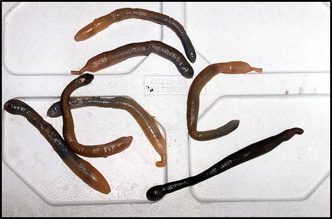

Οι πολύχαιτοι είναι η επικρατέστερη ομάδα θαλάσσιων ασπόνδυλων οργανισμών του βυθού. Σε όλο τον κόσμο έχουν καταγραφεί περίπου 8.000 είδη. Ζουν μαζί με άλλα είδη βενθικών οργανισμών όπως τα μαλάκια, τα εχινόδερμα, τα καρκινοειδή. Τους πολύχαιτους μπορούμε να τους συναντήσουμε σε όλα τα βάθη και σε όλους τους τύπους των βυθών, ενώ μπορούν να επιβιώσουν σε πολύ δυσμενείς συνθήκες.
Η ονομασία τους οφείλεται στις πολυάριθμες τριχοειδείς δομές που φέρουν στο σώμα τους. Οι τρίχες αυτές αν παρατηρηθούν μέσα από μικροσκόπιο, αποκαλύπτουν μια απίστευτη ποικιλία μορφών και σχημάτων.
Τα περισσότερα είδη των πολυχαίτων είναι πολύ μικροσκοπικά και δεν ξεπερνούν σε μήκος τα λίγα χιλιοστά. Για τον λόγο αυτό δεν διακρίνονται εύκολα στο βυθό. Όμως υπάρχουν ορισμένα είδη, όπως το σκουλήκι Φαραώ, το οποίο το χρησιμοποιούν οι ψαράδες για δόλωμα, ή η σκολόπεντρα, που φτάνουν σε μήκος και τα 20 εκ
